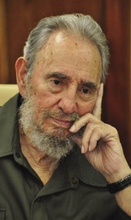
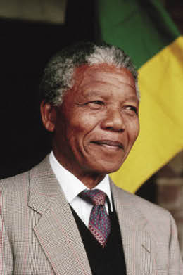

1990’lı yıllarda ve 21. yüzyıla girerken, dünyamızda, kendi halkının bağımsızlık mücadelesinde, işin başından beri ayakta duran üç lider vardır; Güney Afrika’da, Kara Afrika’nın beyazlar karşısındaki yenilgi ve ezilmişliğine son verip seçimle Güney Afrika Birliği’nin başına geçen ve “Batı” tarafından da sonunda desteklenen Mandela; Batista rejiminin çürümüşlüğüne karşı ihtilal yapıp, ABD’ye rağmen Küba’nın lideri olan sosyalist Castro; Kıbrıs’ta, Fazıl Küçük’le birlikte, ta 1950’lerden beri, Enonis’e karşı direnen Türk toplumunun özgürlük ve egemenlik mücadelesini yürütüp 21. yüzyılın eşiğine kadar sürüklenip gelen Rauf Denktaş.
Mandela, Batı’nın bir parçası olan beyaz Güney Afrika yönetimine karşı savaş verdi, hapislerde yattı, sonunda Batı kara lider Mandela’yı kabullenmek zorunda kaldı. Hatta baş tacı yaptı.
Fidel Castro, ABD’ye başkaldıran yaramaz çocuktu ve üstelik “Doğu Bloku’nun ve komünist rejimin ABD’nin burnunun dibindeki Küba’daki, uzantısı olarak, yarım yüzyılı tamamlayarak, 21. yüzyıla giriyordu ve çöken komünizm karşısında bile, ABD baskısına boyun eğmiyordu.


Rauf Denktaş, bir başka coğrafyada, dünyanın en karışık bölgesinde, ufak bir adada, Rum hakimiyetini ve Enosis’i önlemek için 1950’lerden beri mücadele veriyordu ve 21. yüzyıla girerken, Kıbrıs Türk toplumunun tartışmasız ve efsanevi lideriydi.
Kıbrıs’ta Rumlara karşı, Enosis’i önlemek için mücadele etmek demek, Batı’daki ve hatta Doğu’daki büyük devletlerin çizdikleri ve çizmekte oldukları sınır haritalarına karşı savaş vermek demekti. Denktaş, daha yakın geçmişte, yalnız ABD ve Avrupa ile uğraşmıyor, Rusya ile de mücadele etmek zorunda kalıyordu.
ABD’nin, Avrupa’nın ve Rusya’nın adada görmek istedikleri fotoğrafı ortadan yırtmak, her babayiğidin harcı değildir. Denktaş’ın başından beri içinde bulunduğu mücadele, yedi düvele karşı verilen bir mücadeleydi ve hem Mandela’nın hem de Castro’nunkinden daha zordu. Çünkü onlar, sırtlarını iki yakadan birisine dayamak imkânına sahiptiler. Ancak Denktaş’ın bu imkânı da yoktu ve tek dayanağı Anadolu idi.
Üstelik Müslüman bir toplumun lideri olarak, yalnız Batı ile değil, Doğu’nun Ortodoksları ile de savaşmak zorundaydı. Denktaş, Mandela’dan da, Castro’dan da şansızdı.
Bu üç liderin tek ortak yanları vardır; 21. yüzyıla girerken her üçü de kırk yılı aşkın bir süredir, kendi toplumlarının bağımsızlık mücadelesini sürmüşlerdi ve halen lider olarak, egemen toplumlarının başında bulunuyorlardı. Bu üç toplumun rejimleri, sosyopolitik yapıları çok farklı olabilir; ama bu farklar, sözünü ettiğim ortak özelliklerini değiştirmez.
Denktaş çok partili, parlamenter, demokratik bir yapıdaki Kuzey Kıbrıs Türk Cumhuriyeti’nde yıllardır, seçimle işbaşına gelebilen bir liderdir; ancak karizmatik kişiliğe sahip liderler bu kadar uzun süre toplumlarının başında durabilir, seçimle lider olabilirler.
Seversiniz, sevmezsiniz, Castro hâlâ Küba halkının başındadır. Az seversiniz, çok seversiniz, Mandela, Kara Güney Afrika’yı bugünlere getirip seçilmiş lider olarak baştadır. Belki eleştirebileceğiniz özellikleri olabilir; ama Denktaş Kıbrıs Türk Halkı’nın bağımsızlık mücadelesini 1950’lerden beri sürükleyen ve hâlâ da seçilmiş bir lider olarak başında bulunan karizmatik bir devlet adamıdır.